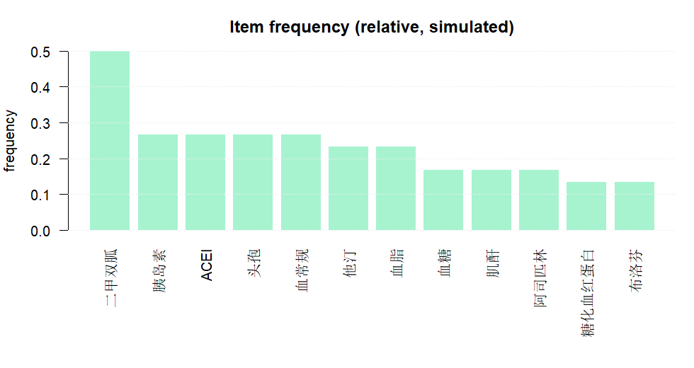

关联规则算法
本练习构造一份“就诊-项目（药物/检查）”的模拟事务数据，使用
arules 的 apriori() 进行关联规则挖掘，并用支持度/置信度/提升度筛选可解释规则。
0. 安装与加载
Step 1 / 安装并加载 arules（与可选可视化包）
options(repos = c(CRAN = "https://mirrors.tuna.tsinghua.edu.cn/CRAN/"))
if (!requireNamespace("arules", quietly = TRUE)) install.packages("arules")
if (!requireNamespace("arulesViz", quietly = TRUE)) install.packages("arulesViz")
library(arules)1. 构造事务数据
数据结构：常见导出是长表（每行一条“visit_id-item”）。关联规则需要把每次就诊聚合成一个“事务”（一组项目）。
Step 2 / 构造长表并转为 transactions
presc_long = data.frame(
visit_id = c(
1, 1, 1, 1,
2, 2, 2,
3, 3, 3, 3,
4, 4, 4,
5, 5,
6, 6, 6,
7, 7, 7, 7,
8, 8,
9, 9, 9,
10, 10, 10
),
item = c(
"二甲双胍", "胰岛素", "血糖", "糖化血红蛋白",
"ACEI", "利尿剂", "肌酐",
"二甲双胍", "他汀", "血脂", "空腹血糖",
"头孢", "布洛芬", "血常规",
"二甲双胍", "他汀",
"ACEI", "他汀", "阿司匹林",
"胰岛素", "二甲双胍", "血糖", "血脂",
"头孢", "血常规",
"ACEI", "利尿剂", "血钾",
"他汀", "阿司匹林", "血脂"
),
stringsAsFactors = FALSE
)
presc_split = split(presc_long$item, presc_long$visit_id)
trans = as(presc_split, "transactions")
summary(trans)
inspect(trans)Step 3 / 查看项目频率（相对频率）
itemFrequency(trans, type = "relative")
2. Apriori 挖掘与筛选
2.1 运行 apriori
Step 4 / 运行 Apriori（小样本示例阈值）
rules = apriori(
trans,
parameter = list(
supp = 0.2, # 至少在 10 次就诊中出现 2 次
conf = 0.6,
minlen = 2,
maxlen = 4
)
)
rulesStep 5 / 查看规则（按 lift 排序）
inspect(sort(rules, by = "lift", decreasing = TRUE))2.2 按 lift/conf 筛选
Step 6 / 示例：只看 lift > 1 的规则
rules_strong = subset(rules, lift > 1)
inspect(sort(rules_strong, by = "lift", decreasing = TRUE))可选：散点图可视化（需 arulesViz）
library(arulesViz)
plot(rules, measure = c("support", "confidence"), shading = "lift")3. 实验内容（提交要求）
提交要求：按下列条目给出相应输出与简要说明。
A. 事务与频率
- 事务摘要：提交
summary(trans)的输出（关键行即可）。 - 频率：提交图 1（或同类频率输出/截图）。
B. 规则挖掘与解读
- 规则列表：提交按 lift 排序后的前 5 条规则（
inspect(head(sort(...), 5))）。 - 医学解读：任选 2 条规则，分别写 1 句话解释“为什么可能同时出现”（以临床路径/共病/监测为线索）。
- 阈值讨论：把
supp改为0.1或0.3，记录规则数量变化，并写 1 句话说明原因。